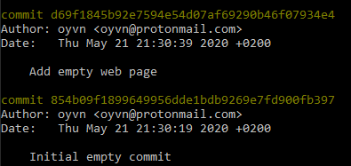

The aim of this guide is to make you more comfortable with git without having to read a whole book. I will do this by giving you more of an “inside tour” of the inner workings of git.
If you are curious and want to become more comfortable with git, this guide aims to satisfy your curiosity more than “traditional” git guides.
I hope you’ll learn enough here to use git with more confidence, and will know better where to look when you are stuck.
Table of Contents:
Act 1: Backups
Git is a computer program that creates snapshots – essentially backups – of folders on your computer. In git, these snapshots are called “commits”. A commit contains everything in that folder:
- The folder structure
- names of files
- contents of files
- metadata of files
Git’s strengths come from how it organizes the commits and from all the commands it provides for manipulating, labelling, and comparing them. Handling commits is what makes git a “Version Control System”.
Git tries to make it very easy to take backups so that you can always find a useful place to return to if needed. Also, having a detailed commit history can help answer questions about the state of things at different points in the past, and about why changes were made. Each commit has info about when it was created, and by whom, as well as a “commit message” written by the committer, which ideally contains important information about why it exists.
Git also has commands for collaborating with others (e.g. push/pull/fetch). The collaboration essentially means exchanging commits and “branches” (which in git are just labels for commits). Usually collaboration means sending them to a server where others can retrieve them, but it’s also possible to share them directly with other collaborators.1
First steps
Download git: https://git-scm.com/download/
Git is usually used from the command line, but there are also other ways to use it (git gui, SourceTree, TortoiseGit to name a few.
Here is a big list of graphical user interfaces for git).
To download an existing repository (for example the one for this blog), run
git clone https://github.com/oyvn/oyvn.github.io.git
To create your own repository in an existing folder, run
git init # Creates the repository
git add . # Prepares a commit of whatever was in
# the folder.
git commit -m"Initial commit" # Stores the commit with the message
# "Initial commit"
The repository
A “repository” (repo) is a collection of commits.
When you use git init to create a repo inside a folder, git adds a hidden folder called “.git” inside it. The .git folder is where it puts all the commits.
The rest of your folder is now referred to as the “working directory”.
When you create a commit, git stores all the files and folders as “objects” in the .git folder. Together, the stored objects contain all the information necessary to recreate the contents of the working directory.
When you retrieve a repo with git clone, git essentially retrieves the .git folder and recreates – “checks out” – the working directory from the objects.
There are a few different types of git objects, let’s take a closer look.
The objects - commit, tree and blob
In git, everything is files. All objects are stored as files in the .git repo. Objects have different types depending on what data they contain. An object’s file name is usually a string of gibberish that serves as a unique reference to that object.
When you call git commit, git creates a “commit” object, as well as “tree” objects for each folder, and “blob” objects for each file in the snapshot.
The blob is the simplest, it’s just a copy of the file, except for the name, which is a gibberish reference instead.
If you look in .git/objects you will find all commit, tree, and blob objects in your repo, all with gibberish names.
By not associating objects with file or folder names, the object can be reused even if the name or location of a file or folder changes, as long as the contents remain unchanged.
A tree object contains:
- The name and a reference for every immediate sub-folder. The reference is to a tree object describing the sub-folder’s contents.
- The name and a reference for every file in the folder. The reference is to a blob object with the file contents.
A commit object contains:
- The committer and author2 (That’s you, if you made the commit – your name and email address as configured via
git config). - The current date and time.
- The commit message that you authored in the process of committing.
- A reference to the tree object for the working directory.
- One or more references to other commit objects (“parent commits”).
At this point I want you to notice a few things:
- Each commit points to a parent. This means the commit can be understood as building on something that came before it.
- Even though a commit is thought of as a change, or difference (also called a “delta”), it is stored by git as a standalone snapshot. Any information about what change it represents is computed when needed, by comparing commits.
- Because objects are referred to by reference, any time an object already exists git just refers to the existing object. So when your commit only changes one file, only one new blob object (and at least one tree object) needs to be created.
- Retrieving any object by its reference just means finding a file with a certain name.
Objects are described in depth in the Git Internals chapter of the free Pro Git Book. I recommend it if you are curious, it’s where I learned this.
Now let’s take a closer look at the unique gibberish reference (“hash”).
References (the “hash”)
This section might be heavy, but keep going, it gets to the heart of many of git’s quirks.
In git, there are hashes everywhere, displayed as long strings of numbers and letters.
All objects have hashes, but you mostly see commit hashes, for example when you run git log.

git log output from this blog’s repo.
The hash is calculated from the contents of a given object, and is completely unique to that object. It’s often called the “sha” of the commit, because the hash is of the type sha1.
A hash (or “digest”) is a big number which always a certain length. For sha1, the length is 160 bits, or 20 bytes3. In git, these bytes are always displayed as a text string of 40 hexadecimal characters (0-9, a-f)4.
The hash is created by taking the data (the input) and doing some convoluted math on it. The input can be any data, of any length. In git, objects serve as inputs.
The convoluted math is such that the hash follows some very strict rules:
- The length of the hash is the same regardless of the length of the input.
- The hash is always the same every time if the input is the same.
- The hash is always completely different if the input is even slightly different, even if a single bit is changed, added or removed.
- Finding an input for a given hash (i.e. calculating the hash backwards) is impossible.
sha1("a"):
86f7e437faa5a7fce15d1ddcb9eaeaea377667b8
sha1("To die, to sleep - to sleep, perchance to dream - ay, there's the rub, for in this sleep of death what dreams may come"):
0855319deffa58b0458c29edeaa8d6a120d44f35
sha1("to die, to sleep - to sleep, perchance to dream - ay, there's the rub, for in this sleep of death what dreams may come"):
cab29b74b98c3ad638fe9c1abed72be40d69badc
Some example SHA1 hashes.
From these rules, we can realize that if any data in an object changes, it is no longer the same object, because the reference will be completely different. That includes if the time changes by just one second in a commit, or a file changes by just one byte, or if a folder name changes slightly.
It also means that the changes must propagate. If a file changes, its reference changes, so the tree containing the reference changes, and the commit containing the tree changes.
Any commits descended from the commit must also change. In fact, looking backwards in time, a commit hash uniquely identifies not just the commit, but also, through its parents and grandparents etc., the entire git history - every tree, blob, and commit - up until that commit. If any detail in any place in the history was different, the current commit would not be the same commit since its hash would be different.
Phew!
Ok. Time for a short story about something slightly different.
Intermission: Index
When creating a commit, you might want to limit the difference from the previous commit. You’ll want to group changes in a logical way, to make the commit easier to describe, and to reason about later.
You might have done many changes, though, since the last commit.
Git helps in this situation by allowing you to “stage” changes before commiting them.
git add adds files to the “index” i.e. stages them, i.e. marks them as “to be committed”.
When you create the commit, only the staged files and folders receive new objects, the rest are stored as unchanged.
Git creates trees and blobs from the files as you stage them, so that git commit just needs to create a commit object which references the tree created for the index.
The index often confuses people, but at this point in the guide it might be interesting to realize the similarities between the index and a commit.
Now for the story.
I once mistakenly deleted a new file I had been working on, losing several hours of work since I hadn’t committed it (commit often, people!). But I remembered that I had staged it at one point, so I knew a blob object was created. I managed to search the files in my .git folder for a phrase present in the lost file, and I found the file. The blob had no references pointing to it, so it would have been garbage collected eventually, but since I was quick I managed to recover it, immediately validating having spent hours learning git internals (YAY!).
Now, let’s get back to our “journey”. We have thoroughly explored what a commit is, and how commits relate to each other. Now, lets look at branches, and see why they are both extremely simple and extremely complicated at the same time.
Act 2: Timelines
Branches
Imagine you have just made a commit. You now want to make some new changes, but you have two different ideas about how to change a file. To fully explore this you need alternate timelines.
Recall that each commit has a parent commit. There is nothing keeping you from creating multiple commits with the same parent. Conversely, a commit object can actually contain multiple parents. This means the overall history doesn’t always look like a single line, but can branch out, and come together.
If you run git branch mybranch you create a branch called “mybranch” from the current commit.
A branch in git is much like a bookmark, it keeps track of how far you’ve come in a certain timeline.
If you run git switch mybranch you make mybranch your active branch (leaving behind the previously active branch, hopefully with a bookmark attached).
Commits you create will always be added to the currently active branch.
This means the commit you were on when you called git branch mybranch will eventually have multiple children, one for each branch that was at one point pointing to it.
The concept of branches is widespread in version control, not just in git.
It usually represents a separate stream of development that can live its own life until it’s ready to become part of a larger, shared stream.
Or until it’s discarded in favor of another stream.
In git, the topology created by branching is an inescapable part of the commit history, and there are tools to visualize it (e.g. gitk).
The names of branches, however, are much more ephemeral than the topology they give rise to, let’s take a look.
Refs
Git’s branches get their names courtesy of another object type, the “ref” object. The ref is the simplest object in git, it’s just a reference to a commit. The file name of the ref is a label given to the commit, for example a branch name (branches are not the only type of ref).
Refs are usually the entry points into the git history: The (human-readable) ref name leads to a commit that leads to its tree and to the history leading up to that commit.
For branches, the reference points to the tip – the most recent commit – on the branch, and this reference is automatically updated as commits are added to the branch.
Tags are another type of ref that are basically branches that never change.
You can find all your branches in .git/refs/heads and all your tags in .git/refs/tags.
The “current branch” is a ref called “HEAD” (.git/HEAD). Switching branches with git switch or git checkout changes this ref.
The way the refs work explains a quirk with git’s branches where, if you are looking at a commit, there’s no way to tell for sure what branch you were on when you made the commit, it’s not recorded anywhere. Even if a branch ref is pointing to a commit, the ref might as well have been created after the commit.
Sometimes this information would have been nice to have, but most of the time, the commit speaks for itself. Tags are usually meant to be permanent, so they can also be used to convey context.
Most branches are temporary. There’s usually only one permanent branch into which other branches are eventually incorporated, after which their ref is often deleted.
One of the ways to incorporate a branch is by merging.
Merging
To merge mybranch into the dev branch, run:
git switch dev
git merge mybranch
Now, all commits previously made on mybranch are part of dev’s history as well.
Merging is a complex topic, but in the end, a git merge is just a commit with more than one parent, tying two or more timelines together. The complexity lies in the procedure for determining the tree object for the merge commit. It must be faithful to the changes that have happened to all the involved timelines since they diverged. This is hard if multiple timelines have been making different changes to the same lines in the same files. Git is very good at merging, but sometimes it gives up and you have to manually tell git how certain parts should look (“resolving conflicts”).
Cherry-pick
What if you made a commit on a branch and later realize that it should be on another branch, but you don’t want to merge the branches together?
git cherry-pick 1234abcd # Copies the commit with hash "1234abcd"
# onto the current branch.
The command git cherry-pick copies a single commit onto the tip of the current branch.
Remember: Changing anything (including the parent) makes the commit a different commit, so a cherry-picked commit will always be viewed as a different commit to its source commit.
The git log can seem to have multiple copies of a commit if it was cherry-picked between branches which were later merged.
But the cherry-pick command changes more than the parent of the new commit.
You’ve learned that git stores a standalone snapshot of the folder contents for each commit, but users of git often care most about what changed from one commit to another.
This is what cherry-pick assumes you want.
Instead of giving the new commit the same tree as the source commit, cherry-pick looks at what change the commit represents and tries to apply that change to the new commit’s parent. This means the new commit usually has a different tree than than its source.
If you think cherry-pick sounds a lot like merging, you are absolutely right. In fact they share functionality under the hood.
You can also cherry-pick multiple commits.
git cherry-pick can take a range of commits and will pick them one after the other.
This brings us nicely to rebase.
Rebase
git rebase is basically cherry-pick with bells and whistles (lot’s of bells and whistles), Though it’s meant to solve a slightly different problem.
Cherry-pick allows you to solve “I want to move those commits into the current branch”, whereas rebase solves “I want to move the current branch as if its commits were made from a different base commit”.5
Like cherry-pick, rebase makes all the moved commits into different commits: Since the first commit gets a different parent it becomes a different commit, which means the parent of the next commit changes, and so on.
Rebase can be used for many things, in many ways. Finally, here are some examples, demonstrating some of the most significant bells and whistles:
Removing commits
If you want to remove a commit (and its change) from the history, rebase the commits after it onto the commit before it.
git rebase HEAD~1 --onto HEAD~2 # Removes the 2nd-to-last commit.
Adding more changes to an old commit
If you forgot to include something in a commit you made a few commits ago, you can make a new commit, and combine it into the original commit.
For this, you need to use “Interactive Rebase”.
git rebase --interactive is rebase god-mode, allowing you to freely change the order of commits, and to split the and squash them together during the course of the rebase.
git commit --fixup HEAD~2 # Create a commit to be squashed
# into the 3rd-to-last commit.
git rebase --interactive HEAD~4 # Rebase the last 4 commits
# interactively.
When invoking interactive rebase, git will open a text file listing all the commits, expecting you to edit, save and close it.
Clean history when collaborating
If you have made commits, but someone else has made commits to the same branch, git push will fail, telling you to git pull.
By default, git pull will merge the other changes into your branch.
These merge commits are particularly confusing, since they are unintended and arbitrary.
git pull --rebase will instead rebase your changes on top of the new commits as if you made your commits after them.
Making the history linear
If a branch has merged many other branches into it, the branch’s commit history can look very confusing. By default, git will drop all merge commits it encounters during a rebase, instead cherry-picking all the regular commits one by one, so the resulting history is linear.
Fully reconstructing the history
On the other hand, if you want full control over merge commits as well, git rebase --interactive --rebase-merges makes you the ultimate ruler of your git history.
You can create or destroy whole branches, merge them at will, and freely move commits wherever they suit your needs, all by rearranging and editing a text file.

Powerful stuff.
Afterword
Git is fantastic, even if the commands can be confusing. Its foundations and core ideas are rock solid and work very well.
I hope you enjoyed this and learned something. I’m new to writing guides like this, and I might well revise it in the future, so feedback is highly appreciated.
Good luck!
Footnotes
-
In git, creating and editing commits is done completely independently from sharing commits with others, which is why git is called a “Distributed Version Control System”. In contrast, non-distributed version control systems like SVN typically send the commit to the server when it’s created. This means you won’t feel as free to make commits because you have to deal with any collaboration problems (if someone has made a change to the same file as you) in order to make the commit, and anyone can see the commit you’ve made. Git allows you to do these activities separately, which makes sense since in principle there is no reason to combine them. ↩
-
There are a finite (2¹⁶⁰) number of possible sha1 hashes, so in theory there can be inputs that produce the same hash, but in practice 2¹⁶⁰ is such a ridiculously large number that this never happens (most likely, every unique object in every git repo ever made has a different hash). ↩
-
For convenience, git allows you to shorten hashes when calling git commands, as long as it can still uniquely identify the commit from the given hex digits. For example,
git show d69f1is equivalent to
git show d69f1845b92e7594e54d07af69290b46f07934e4 -
For reference, the following commands accomplish the same as
git rebase <newbase>git reset --hard <newbase> # Modify the branch ref so it points to # <newbase>, allowing us to add commits to it git cherry-pick ..@{1} # cherry-pick all commits not already present # on the new branch. @{1} refers to where we # were before the git reset (see "reflog").